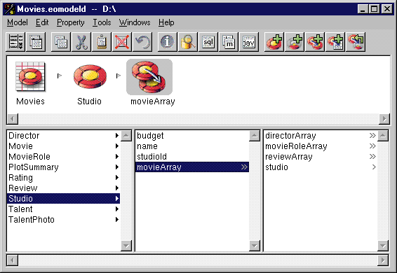
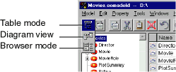
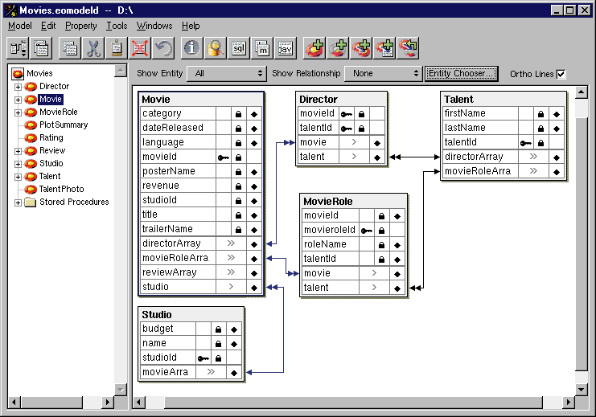
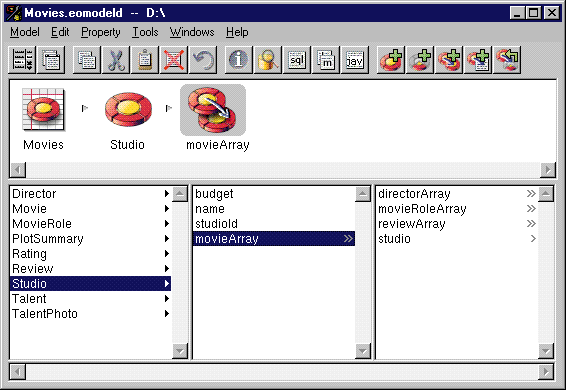

Figure 18. Model Editor in Browser Mode
 Table of Contents
Table of Contents  Next Section
Table of Contents
Next Section
Table of Contents  Previous Section
Previous Section
Using Other Display Modes
In addition to the table mode, the Model Editor has two other display modes: browser mode and diagram view. You can switch between display modes with the Change Display View pop-up button on the toolbar as shown in Figure 16.

Figure 16. Changing the Model Editor's Display Mode

Figure 17. Model Editor Displaying Diagram View
Diagram View
The diagram view of the Model Editor is very useful for displaying and printing your model graphically. As with the table mode, you can use the diagram view to edit components of the model, but it's editing capabilities are more limited. Browser Mode
To display the attributes for a particular entity, such as Movie, select the entity. The attributes appear in the column to the right of the entity along with the entity's relationships. You can traverse the model by clicking relationships, as shown in Figure 18

Figure 18. Model Editor in Browser Mode
Table of Contents Next Section